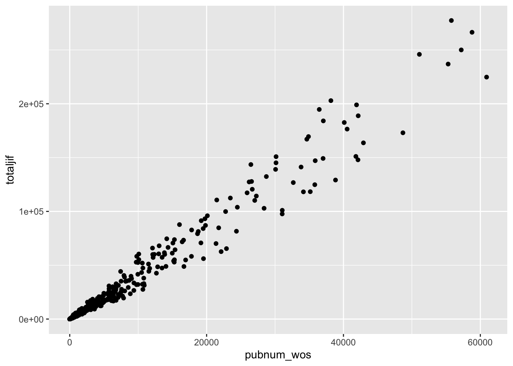
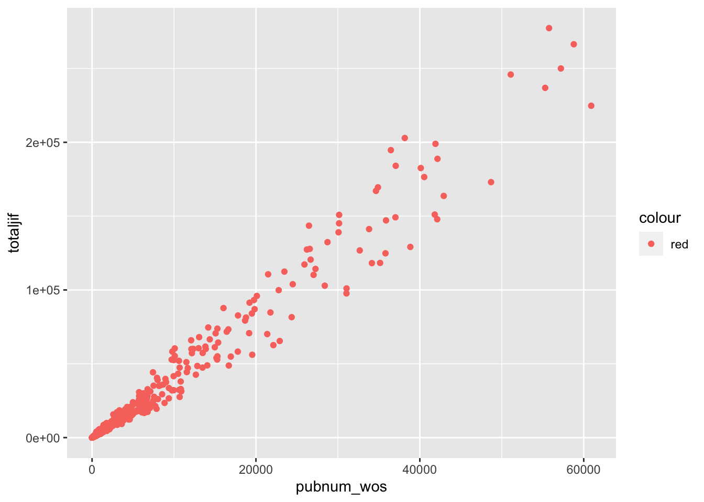
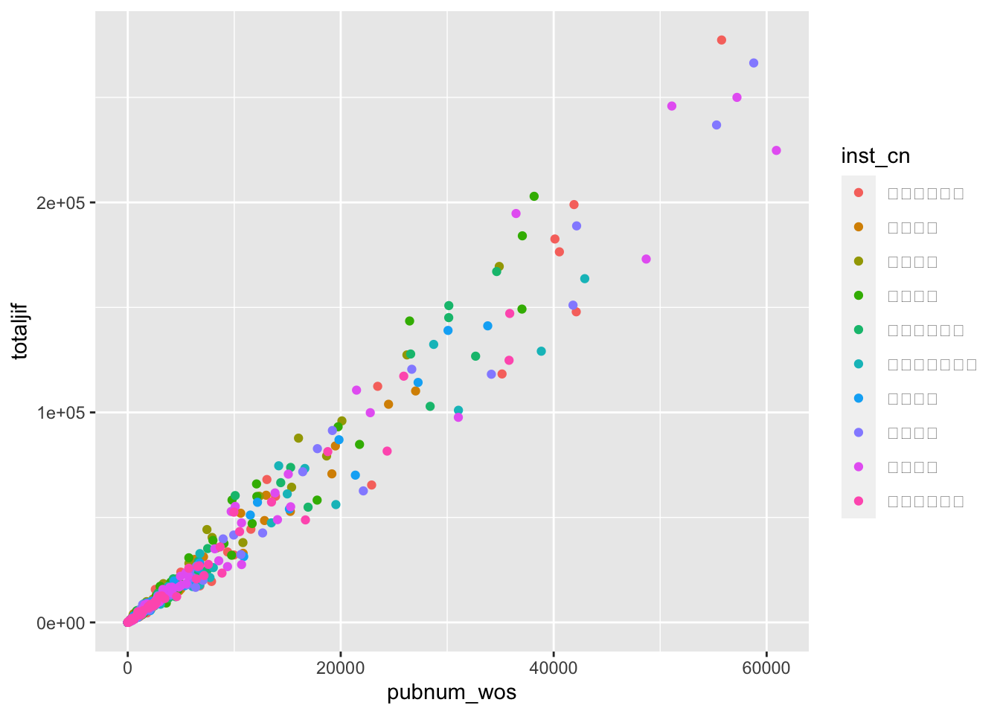
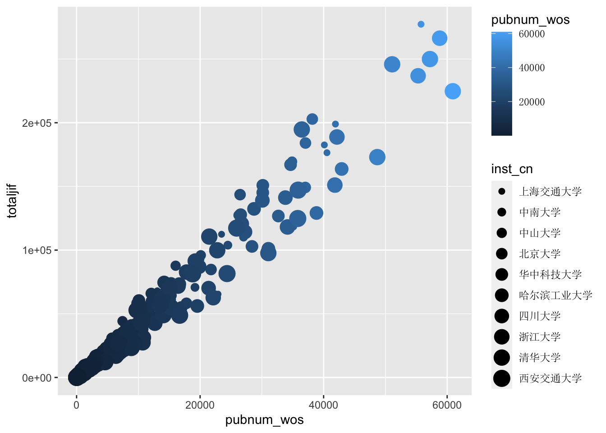
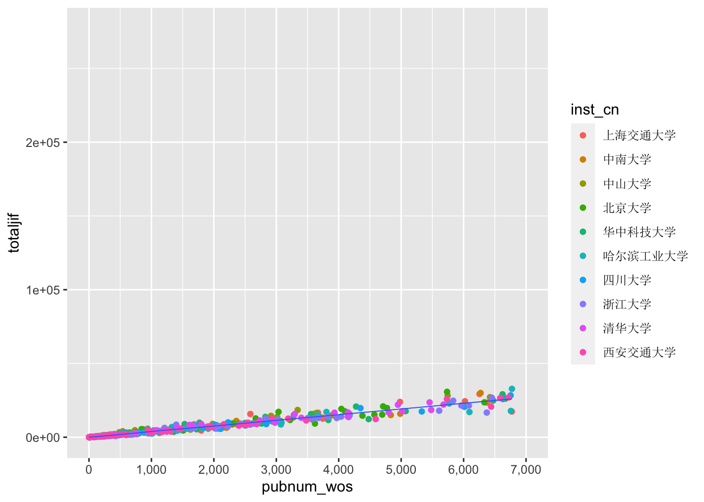
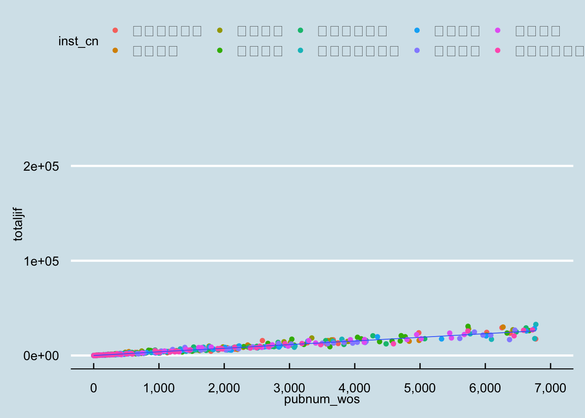
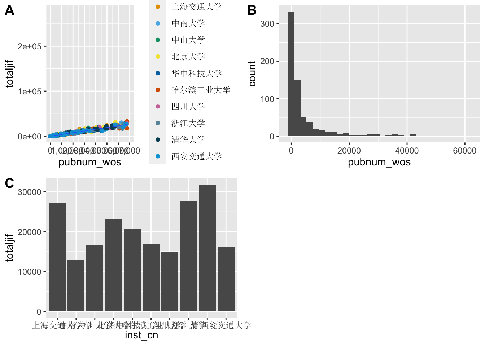
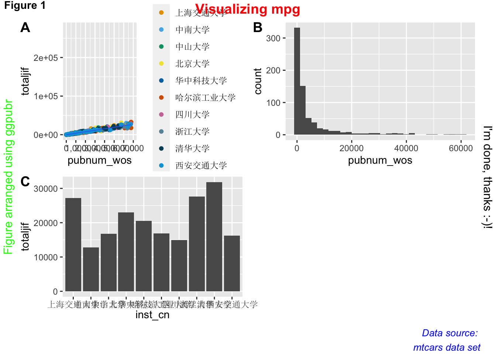
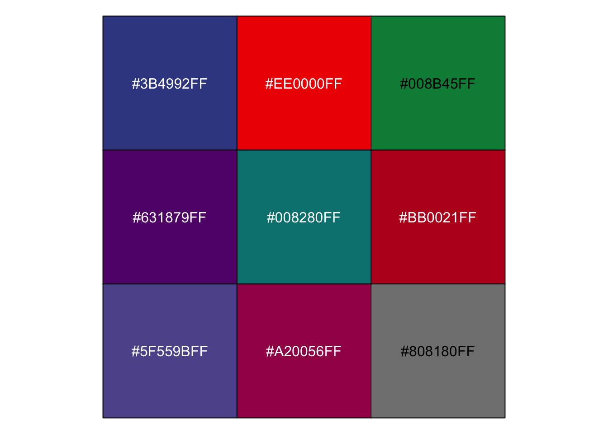

第 6 章 数据可视化
人都是视觉动物。
6.1 从一个可以画恐龙的包说起
在闲逛R论坛的时候，偶然发现有人贴了一段如下的代码，这个代码可以画出一个恐龙。
# install.packages("datasauRus")
library("datasauRus")
library(ggplot2)
ggplot(subset(datasaurus_dozen, dataset=='dino'),
aes(x, y)) +
geom_point() 
太神奇了吧，居然有人写了个包来画恐龙！但是仔细一想，这事儿可能没有那么简单。事出非常必有妖，谁会闲到辛辛苦苦发布一个R包就为了画个恐龙呢。
果然datasauRus是一个非常有名的数据包，它包括了若干组描述性统计完全一致，但是分布却截然不同的数据集，恰恰说明了可视化的必要性。

详情可见论文，*Same Stats, Different Graphs: Generating Datasets with Varied Appearance and Identical Statistics through Simulated Annealing**
##
## Attaching package: 'dplyr'## The following objects are masked from 'package:stats':
##
## filter, lag## The following objects are masked from 'package:base':
##
## intersect, setdiff, setequal, uniondatasaurus_dozen %>%
dplyr::group_by(dataset) %>%
dplyr::summarise(
mean_x = mean(x),
mean_y = mean(y),
std_dev_x = sd(x),
std_dev_y = sd(y),
corr_x_y = cor(x, y))## # A tibble: 13 × 6
## dataset mean_x mean_y std_dev_x std_dev_y corr_x_y
## <chr> <dbl> <dbl> <dbl> <dbl> <dbl>
## 1 away 54.3 47.8 16.8 26.9 -0.0641
## 2 bullseye 54.3 47.8 16.8 26.9 -0.0686
## 3 circle 54.3 47.8 16.8 26.9 -0.0683
## 4 dino 54.3 47.8 16.8 26.9 -0.0645
## 5 dots 54.3 47.8 16.8 26.9 -0.0603
## 6 h_lines 54.3 47.8 16.8 26.9 -0.0617
## 7 high_lines 54.3 47.8 16.8 26.9 -0.0685
## 8 slant_down 54.3 47.8 16.8 26.9 -0.0690
## 9 slant_up 54.3 47.8 16.8 26.9 -0.0686
## 10 star 54.3 47.8 16.8 26.9 -0.0630
## 11 v_lines 54.3 47.8 16.8 26.9 -0.0694
## 12 wide_lines 54.3 47.8 16.8 26.9 -0.0666
## 13 x_shape 54.3 47.8 16.8 26.9 -0.06566.2 数据可视化的目的
数据可视化的目的是直观地向读者传递数据中包含的信息。重要的事情说三遍，传递信息、传递信息、传递信息！
因此，一个优秀的可视化应该具备以下的特征。
重点突出。要让读者第一眼就能发现你要传达的主要信息，而不是暗戳戳的隐藏起来，等待别人发现。
表意清晰。主要信息的传递要明确清晰，不要产生歧义，让读者自行发挥。充分利用注释、标题等来避免歧义。
信息量大。图形的标题、注释都可以传达信息，在有限的图形内，尽可能传递更多信息。
逻辑完整。数据传递的信息要有逻辑，能够独立阅读。
美观。尽可能增强图形的美学水平，让读者愿意看，看着舒服，愿意分享。
6.3 图形语法（Grammar of Graphics）
图形语法（Grammar of Graphics，简称GG）是Leland Wilkinson开发的一套用来描述所有统计图表深层特性的语法规则，该语法回答了什么是统计图这一问题，以自底向上的方式组织最基本的元素形成更高级的元素。在GG看来，一张图就是从数据到几何标记对象的图形属性的一组映射，此外图形中还可能包含数据的统计变换，最后绘制在某个特定的坐标系中。此时，科学绘图就会非常接近画油画，绘图的过程就是在一张空白的画布上，一层一层地叠加图形要素。
粗略地，GG拆解的主要图形要素可以分为三大类：几何对象、美术属性与标签注释。
几何对象指的是将数据映射到图形之后的几何类型，包括点（point）、线（line）、直方（histgram）、柱（bar）等。
美术属性指的是几何对象呈现在图形中的属性，例如颜色（color）、形状（shape）、尺寸（size）、透明度（alpha）等。属性让同一类几何对象传递更加丰富的信息。
标签注释包括标题（title）、轴标题（x/y title）、轴标签（xlab/ylab）、文本标签（text label）、注释（note）、图例（legend）等。可以进一步丰富图形传达的信息。
通过图形语法可以实现统计绘图的自动化，满足可复现原则与一次原则。
更多关于GG的内容，可以参考Wilkinson的著作The Grammar of Graphics。
6.4 ggplot2
将GG在R语言中实现的又是我们熟悉的大神Wickham，他设计了ggplot2包，ggplot2及其家族现在已经成为统计制图的最佳工具。
我们看下发表在经济学人杂志的一篇文章中的图片，图片来源http://www.economist.com/node/21541178。数据来源，http://www.transparency.org/content/download/64476/1031428

这幅图首先在视觉呈现非常美观，然后信息传达非常丰富，几乎所有的图形要素都被利用了起来。可以分类总结如下：

本节的任务就是逐步学习ggplot2的要素，并画出此图。教学材料受到哈佛大学IQSS的启发。数据位于：EconomistData.csv。
总体来说，ggplot作图的标准模板为：
ggplot(data = <Data>) +
<Geom_Function>(mapping = aes(<Mappings>),
stat = <Stat>,
position = <Position>) +
<Coordinate_Function> +
<Facet_Function> +
<Scale_Function> +
<Theme_Function>ggplot2的语法逻辑为：
ggplot函数指定数据，然后使用+叠加后续绘图动作；geom_函数族（或者stat_函数族）指定特定类型的几何对象；aes函数调节几何对象的美术属性；coordinate_函数指定坐标系统（可用于画地图）；facet_函数进行分面；scale函数调节坐标尺；theme、lab、guide函数等调节主题、标题、图例等附加属性。
此外，last_plot()可返回上一张图片，ggsave用于图片输出。
6.4.1 几何对象
接下来，以绘制散点图为例介绍ggplot2的基本语法。以第三章使用的我国211大学发表论文的数据pub211.csv为例，使用ggplot函数指定画图数据框为pub_211_sum，aes参数用于指定底图的x轴与y轴对应的变量，然后使用geom_point函数绘制散点图。
library(readr)
library(dplyr)
pub_211 <- read_csv("pub_211.csv")
# 选出2022年发文最多的十所学校
top10 <- pub_211 %>%
filter(pubyear == 2022) %>%
group_by(inst_cn) %>%
summarise(pubnum_wos = sum(pubnum_wos)) %>%
arrange(desc(pubnum_wos)) %>%
slice(1:10)
top10_pub <- pub_211 %>%
semi_join(y = top10,by = "inst_cn") %>%
#filter(pubyear == 2022) %>%
group_by(inst_cn,cnsubject) %>%
summarise(pubnum_wos = sum(pubnum_wos),
totaljif = sum(totaljif))
p1 <- ggplot(top10_pub, aes(x = pubnum_wos, y = totaljif))
p2 <- p1 + geom_point()
print(p2)
练习题
导入EconomistData.csv数据，该数据包括了部分国家的人类发展指数与腐败感知指数。创建一个以 CPI 为x轴，HDI为y轴的散点图。
除散点图外，ggplot还支持类型丰富的几何对象，现将主要类型总结如下：
| 几何对象 | 变量类型 | 图类型 |
|---|---|---|
geom_blank |
初始化 | 空白画布 |
expand_limits |
初始化 | 扩展画布范围以囊括所有数据 |
geom_curve |
初始化 | 一条曲线，指定起止点与弧度 |
geom_path |
初始化 | 点组成的路径 |
geom_polygon |
初始化 | 多边形 |
geom_rect |
初始化 | 矩形或方块 |
geom_ribbon |
初始化 | 带状区域，常用于表示区域的不确定性或置信区间 |
geom_abline |
线段 | 斜直线 |
geom_hline |
线段 | 竖线 |
geom_vline |
线段 | 横线 |
geom_segment |
线段 | 斜线段 |
geom_spoke |
线段 | 基于原点的向量或箭头，常用于极坐标 |
geom_area |
单连续变量 | 向坐标轴的区域 |
geom_density |
单连续变量 | 核密度分布图 |
geom_dotplot |
单连续变量 | 分布堆叠图，点的堆叠表示相同数值的重复次数。 |
geom_freqpoly |
单连续变量 | 频率多边形图，连续变量的频率分布情况，是一种直方图的替代方式 |
geom_histogram |
单连续变量 | 分布直方图 |
geom_qq |
单连续变量 | Q-Q 图（Quantile-Quantile Plot） |
geom_bar |
单离散变量 | 条形图 |
geom_point |
双连续变量 | 散点图 |
geom_rug |
双连续变量 | 轴须图，以类似条形码的方式在数据外侧展示变量分布密度 |
geom_smooth |
双连续变量 | 平滑拟合线 |
geom_text |
双连续变量 | 为散点图添加文本标签 |
geom_col |
一个离散变量加一个连续变量 | 柱状图 |
geom_boxplot |
一个离散变量加一个连续变量 | 箱线图 |
geom_violin |
一个离散变量加一个连续变量 | 小提琴图 |
geom_count |
双离散变量 | 散点密度图，点大小表达该位置点的数量 |
geom_jitter |
双离散变量 | 抖动散点图，对数据进行随机抖动，以展示离散点的密度分布情况 |
geom_bin2d |
双变量 | 二维直方图 |
geom_density_2d |
双变量 | 二维核密度图 |
geom_hex |
双变量 | 六边形分箱 |
geom_line |
双变量 | 折线图 |
geom_step |
双变量 | 阶梯图 |
geom_crossbar |
误差变量 | 误差条图 |
geom_errorbar |
误差变量 | 误差雷达图 |
geom_linerange |
误差变量 | 误差线图 |
geom_pointrange |
误差变量 | 误差线图（带均值点） |
geom_map |
地理变量 | 地图 |
geom_contour |
三变量 | 等高线图 |
geom_contour_filled |
三变量 | 与geom_contour配合使用制作带填充的等高线图 |
geom_raster |
三变量 | 栅格图 |
geom_tile |
三变量 | 热力图 |
更多细节请参考，https://rstudio.github.io/cheatsheets/html/data-visualization.html#geoms。
6.4.2 美术属性
在geom_point函数中，aes可用于指定几何对象的美术属性。指定美术属性既可使用常量，例如制定颜色为红色（red），也可以使用变量，例如通过学科（cnsubject）来赋值颜色。

theme(legend.text = element_text(family='SimSun'))指定图例字体即可。

使用变量指定美术属性时，会出现两种情形：离散变量与连续变量。以颜色为例，离散变量对应了若干种颜色，而连续变量则对应了渐变的颜色。
p1 + geom_point(aes(color = pubnum_wos,size = inst_cn)) + theme(legend.text = element_text(family='SimSun'))## Warning: Using size for a discrete variable is not advised. 常用的美学属性总结如下：
| 几何对象 | 美术属性 | 作用 |
|---|---|---|
| all | color | 颜色，支持色号、文本等方式赋值 |
| all | fill | 填充颜色 |
| all | size | 大小 |
| all | alpha | 透明度 |
| line | linetype | 线条类型：支持0-6共七种类型 |
| line | lineend | 线条结尾：“round”, “butt” (缺省值), “square” |
| line | linejoin | 线条连接处：“round” (缺省值), “mitre”, “bevel”. |
| point | shape | 点的形状：0-25共26种形状 |
| point/line | stroke | 图形或线条的轮廓 |
| text | family | 指定文本的字体 |
| text | fontface | 指定字体样式：“plain”, “bold”, “italic” |
| text | hjust | 纵向位置：top = 1, middle = 0.5, bottom = 0 |
| text | vjust | 横向位置：left = 0, center = 0.5, right = 1 |
更多细节可以参考：https://ggplot2.tidyverse.org/articles/ggplot2-specs.html#colour-and-fill
练习题
在上一题的基础上
将图的点改为蓝色(blue)；
使用Region变量为点着色
6.4.3 统计变换
在ggplot2中，统计变换函数（statistical transformation functions）用于对数据进行统计计算或转换，以便在图表中呈现不同的数据表现形式。
例如，stat_summary函数可将数据按照指定的函数进行汇总，例如计算平均值、中位数等，并将汇总结果绘制到图表中。下面的代码中，fun参数指定了计算均值，geom参数制定了转换后的集合对象。

其他统计转换数据包括，stat_function，允许将数学函数应用到图形中。可以使用此函数绘制自定义函数的图形；stat_ecdf，绘制经验累积分布函数，显示数据的累积分布情况；stat_contour用于创建等高线图，展示二维数据的密度分布情况；stat_density用于绘制核密度估计曲线，展示数据的密度分布情况；stat_summary_hex类似于stat_summary，用六边形的方式呈现数据的汇总结果。
尽管统计转换函数集成了数据转换与绘图，看上去比较方便，但是我们推荐读者实践中还是将数据转换与绘图分开，这样的代码更直观，也更加容易调整。
6.4.4 标尺
scale_函数族用于调整x轴，y轴以及所有美术属性对应变量的尺度。在使用标尺函数的时候，需要首先明确调整的变量是连续变量还是离散变量。scale_*_continuous将数据的连续取值映射为图形属性的取值，scale_*_discrete将数据的离散取值映射为图形属性的取值。
scale_x_(y_)_continuous/discrete用于调整坐标轴的范围（limits参数）、刻度（breaks，labels参数）以及位置（position参数）等特性。
p3 <- p1 + geom_point(aes(color = inst_cn)) +
theme(legend.text = element_text(family='SimSun')) +
geom_smooth(size = 0.3) +
scale_x_continuous(limits = c(0,7000),
breaks = seq(0,7000,1000),
labels = c("0","1,000","2,000",
"3,000","4,000","5,000",
"6,000","7,000"))## Warning: Using `size` aesthetic for lines was deprecated in ggplot2 3.4.0.
## ℹ Please use `linewidth` instead.
## This warning is displayed once every 8 hours.
## Call `lifecycle::last_lifecycle_warnings()` to see where this warning was
## generated.## `geom_smooth()` using method = 'loess' and formula = 'y ~ x'## Warning: Removed 131 rows containing non-finite values (`stat_smooth()`).## Warning: Removed 131 rows containing missing values (`geom_point()`).
其他常用scale函数，scale_*_binned将数据的连续取值映射为离散 的统计堆；scale_*_identity使用数据的值作为图形属性的取值
scale_*_manual(values = c())将数据的离散取值作为手工指定的图形属性的取值；
scale_*_date(date_labels = "%m/%d"),date_breaks = "2 weeks")将数据值视为日期；scale_*_datetime()将数据视为时间。
坐标轴比例也可以调节，scale_x_log10以log10比例绘制x轴，
scale_x_reverse反转x轴方向，scale_x_sqrt以平方根绘制x。
例如，scale_color_manual函数可以根据个人的喜好来定制数据，后面小节中会介绍如何选择颜色。
p4 <- p1 + geom_point(aes(color = inst_cn)) +
theme(legend.text = element_text(family='SimSun')) +
geom_smooth(size = 0.3) +
scale_x_continuous(limits = c(0,7000),
breaks = seq(0,7000,1000),
labels = c("0","1,000","2,000",
"3,000","4,000","5,000",
"6,000","7,000")) +
scale_color_manual(values = c("#E69F00", "#56B4E9","#009E73", "#F0E442", "#0072B2","#D55E00","#CC79A7","#6794a7","#014d64","#01a2d9"))
print(p4)## `geom_smooth()` using method = 'loess' and formula = 'y ~ x'## Warning: Removed 131 rows containing non-finite values (`stat_smooth()`).## Warning: Removed 131 rows containing missing values (`geom_point()`).
练习题 在上一个题目的基础上，
使用scale_x_(y_)修改x轴与y轴的scale，以增加其可读性；
使用scale_color_manual函数将散点的颜色调整为c(“red”,”blue”,“green”,“black”,“yellow”,“gray”)，对应颜色的label调整为，c(“Americas”,“Asia Pacific”,“East Europe & Central Asia”,“West Europe”,“East Asia”,“South Asia”)
6.4.5 坐标系
gglot2默认使用笛卡尔坐标系，coord_fixed指定x和y单位之间固定长宽比的笛卡尔坐标，coord_polar为极坐标系，coord_trans(y = 'sqrt')使用变量转换后的坐标系，coord_map用于地理绘图中的坐标系。
6.4.6 分面
分面（facet）指的是按照某一个或两个分类变量的不同值将数据分为若干个子集，每个数据子集分别在分面上作图，使用facet_wrap可以直接分面，分面可以使用单个变量，也可以使用两个变量。
p1 + geom_point() +
theme(text = element_text(family='SimSun')) +
geom_smooth(size = 0.3) +
facet_wrap(~ inst_cn)## `geom_smooth()` using method = 'loess' and formula = 'y ~ x'
6.4.7 标签与图例
labs函数用于标记图中的元素，其x/y参数标注坐标轴，title参数标注图标题，subtitle标注图的子标题，caption标注图说明。
guides函数用于设置图例，常用的包括取消图例（设定对应美术属性为none），以及设置图例位置theme(legend.position = "bottom")。
annotate函数可以直接在图上手工添加文本。
6.4.8 主题
一张图里面的格式可以统称为主题，通过theme函数可以对图的每一处细节进行调整。
theme函数调用的方式为theme(element_name = element_function())，其中element_name为调整的对象，element_name涵盖了画面中的每一个要素，笼统的说，在excel里面可以调整的细节，都被其涵盖在内；element_function为元素函数，元素函数有四种，element_text()一般用于控制标签和标题的字体风格：element_line一般用于控制线条或线段的颜色或线条类型；element_rect一般用于控制背景矩形的颜色或者边界线条类型；element_blank不分配相应的绘图空间，即删去这个地方的绘图元素。
由于主题调整的细节非常多，此处就不一一展开了，读者可以查看theme函数的帮助文档来逐步调整。我们在后文的案例中展示了这一过程如何开展。
此外，一些常用的样式被封装在一些主题当中，例如theme_bw()，theme_classic()，theme_minimal()，调用这些主题会覆盖掉主题的设置。
## `geom_smooth()` using method = 'loess' and formula = 'y ~ x'## Warning: Removed 131 rows containing non-finite values (`stat_smooth()`).## Warning: Removed 131 rows containing missing values (`geom_point()`).
## `geom_smooth()` using method = 'loess' and formula = 'y ~ x'## Warning: Removed 131 rows containing non-finite values (`stat_smooth()`).
## Removed 131 rows containing missing values (`geom_point()`).
## `geom_smooth()` using method = 'loess' and formula = 'y ~ x'## Warning: Removed 131 rows containing non-finite values (`stat_smooth()`).
## Removed 131 rows containing missing values (`geom_point()`).
ggthemes包提供了更丰富的格式主题，
## `geom_smooth()` using method = 'loess' and formula = 'y ~ x'## Warning: Removed 131 rows containing non-finite values (`stat_smooth()`).## Warning: Removed 131 rows containing missing values (`geom_point()`).
## `geom_smooth()` using method = 'loess' and formula = 'y ~ x'## Warning: Removed 131 rows containing non-finite values (`stat_smooth()`).
## Removed 131 rows containing missing values (`geom_point()`).
## `geom_smooth()` using method = 'loess' and formula = 'y ~ x'## Warning: Removed 131 rows containing non-finite values (`stat_smooth()`).
## Removed 131 rows containing missing values (`geom_point()`).
theme的另一种用法为讲自己设置的格式储存为主题，用于后续的图形中简单调用。
6.4.9 图例
guides函数用于调整图例的标题、位置、标签以及箱体。常用的用法为，guides(color = "none)可以移除颜色对应的图例；当多个美术属性使用同一个变量进行映射的时候，可以用下面的代码来合并图例。
guides(
color = guide_legend(),
size = guide_legend()
)练习题
利用theme函数的丰富参数，绘制终极图形。
6.4.10 图形组合
很多时候，我们需要把多个图形组合成一个图形。我们推荐使用ggpubr包中的ggarrange函数来完成图形组合。被组合的图形，依次作为参数输入函数，并使用nrow和ncol指定组合的行与列，labels参数为子图指定标签。组合图形会自动对齐坐标轴。
if(!require(ggpubr)) install.packages("ggpubr")
library(ggpubr)
p5 <- ggplot(top10_pub,aes(x = pubnum_wos)) +
geom_histogram()
p6 <- ggplot(top10_pub, aes(x = inst_cn, y = totaljif)) +
stat_summary(fun = mean, geom = "col") +
theme(axis.text.x = element_text(family='SimSun'))
figure <- ggarrange(p4, p5, p6,
labels = c("A", "B", "C"),
ncol = 2, nrow = 2)## `geom_smooth()` using method = 'loess' and formula = 'y ~ x'
## `stat_bin()` using `bins = 30`. Pick better value with `binwidth`.
annotate_figure函数可以用于为组合后的图形添加注释。
annotate_figure(figure,
top = text_grob("Visualizing mpg", color = "red", face = "bold", size = 14),
bottom = text_grob("Data source: \n mtcars data set", color = "blue",
hjust = 1, x = 1, face = "italic", size = 10),
left = text_grob("Figure arranged using ggpubr", color = "green", rot = 90),
right = "I'm done, thanks :-)!",
fig.lab = "Figure 1", fig.lab.face = "bold"
)
叠加使用ggarrange可以按照指定的比例组合图形。
ggarrange(p4, # 第一行散点图
ggarrange(p5, p6, ncol = 2, labels = c("B", "C")), # 第二行箱形图和点图
nrow = 2,
labels = "A" # 散点图的标签
) ## `stat_bin()` using `bins = 30`. Pick better value with `binwidth`.
## `geom_smooth()` using method = 'loess' and formula = 'y ~ x'
此外，common.legend = TRUE可以将图例合并，legend = "bottom"可以指定图例位置到底端。
ggpubr为制作可发表的图形，还提供了诸多函数，例如，ggtexttable可以将表格变成图形对象；ggparagraph将文本变成图形对象。
感兴趣的读者可以阅读官方文档，https://rpkgs.datanovia.com/ggpubr。
6.5 调色板
选择优雅的颜色是高质量数据可视化的保障。艺术造诣和编程能力并不是互斥的技能点。例如，R语言社区资深开发者（ggplot2包的作者）、计算认知科学家Danielle Navarro就是一名计算艺术家（computational artist）。下面是她的作品Dancer，更多作品可以浏览https://art.djnavarro.net/。
6.5.1 ggsci
如果不是艺术造诣很高的话，选择成熟的配色是最安全的选择。ggthemes包封装了多种成熟的主题，ggsci则包括了多种杂志的配色方案，我们可以使用scales包的show_col函数来查看色号。
例如，我们要查看并使用经济学人杂志的调色板，可以用下面的代码

## [1] "#6794a7" "#014d64" "#01a2d9" "#7ad2f6" "#00887d" "#76c0c1" "#7c260b"
## [8] "#ee8f71" "#adadad"如果要使用science杂志的配色，可以用下面的代码。

## [1] "#3B4992FF" "#EE0000FF" "#008B45FF" "#631879FF" "#008280FF" "#BB0021FF"
## [7] "#5F559BFF" "#A20056FF" "#808180FF"6.5.2 colorspace
colorspace包也提供了丰富的配色选择，我们这里介绍一下这个包的使用。根据着色遍变量的类型，colorspace包提供了配色模板：定性型（离散变量）、序列型（连续变量渐变）和渐扩型（连续变量不同色系扩散）。


6.6 动图
gganimate是基于ggplot2的制作动图的扩展包。动图的原理是把逐帧画图，然后通过转换设置将每一帧图连续展示。anim_save命令用于将动图储存为.gif文件。
if(!require(gganimate)) install.packages('gganimate')
if(!require(gifski)) install.packages('gifski')
library(gifski) # 加载该包用于在rmarkdown中展示动图
top10_pub_year <- pub_211 %>%
semi_join(y = top10,by = "inst_cn") %>%
group_by(inst_cn,cnsubject,pubyear) %>%
summarise(pubnum_wos = sum(pubnum_wos),
totaljif = sum(totaljif)) %>%
filter(pubyear >= 2010) %>%
mutate(pubyear = as.integer(pubyear))
ggplot(top10_pub_year, aes(pubnum_wos, totaljif, color = inst_cn)) +
geom_point() +
theme_bw() +
theme(legend.text = element_text(family='SimSun'))+
# 指定标签
labs(title = 'Year: {frame_time}', x = 'Number of Publications', y = 'Total JIF') +
transition_time(pubyear) + #
ease_aes('linear')
gganimate主要包含五个函数族来调节动画效果：transition_定义动画是根据哪个变量进行动画展示，以及如何展示；view_定义坐标轴随数据变化；shadow_制作影子效果，定义逐帧相继出现的方式；enter_/exit_定义新数据出现和旧数据退去的方式；ease_aes美术属性定义，控制变化的节奏(如何让整个动画看起来更舒适)。
感兴趣的读者，推荐阅读官方文档，https://gganimate.com/articles/gganimate.html
6.8 数据大屏Dashboard
数据大屏Dashboard用于集中展示数据可视化的成果。R中的Shiny包可用于制作炫酷的数据大屏。但是这要求用户了解HHTML语言，我们在附录章节中介绍Shiny包的基本用法。
flexdashboard包支持使用Rmarkdown语法制作数据大屏，已经可以满足绝大多数的大屏需求。
flexdashboard包的基本原理是将Dashiboard分为两部分，一是内容，二是页面布局。内容可以主要是ggplot以及扩展包的可视化图形；页面布局则通过简单的语法来进行设置，从而达到轻量级制作大屏的目的。

6.8.3 dashboard布局
在flexdashboard中，使用三级markdown标题来标记不同的组成部分，通过制定属性的方式来设置组成部分的尺寸。

感兴趣的读者，推荐通过官方介绍深入学习，https://pkgs.rstudio.com/flexdashboard/index.html。
6.9 其他参考资料
希望深入了解ggplot2语法的读者，推荐直接阅读Wickham的著作，ggplot2: Elegant Graphics for Data Analysis，https://ggplot2-book.org/
The R Graph Gallery网页提供了丰富的可视化样品作为参考，https://r-graph-gallery.com/index.html